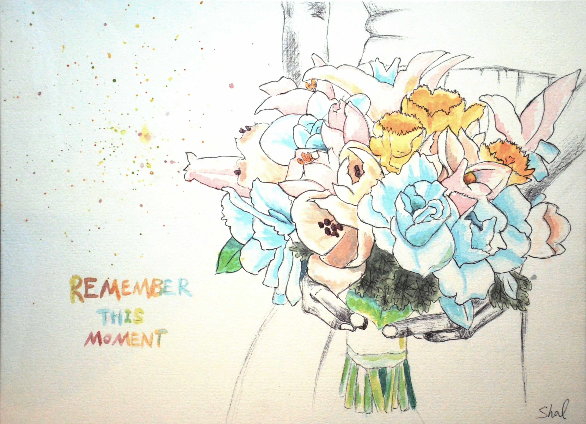

He said she was what was missing
She said instantly she knew
She was a question to be answered
And his answer was "I do."
-- Cindy Chupack
.

Hugh teaches Biology at a university.
Shal is a web developer.
Hugh grew up in a small town in upstate NY.
Shal grew up in an 8-million-population city in China.
Shal has black hair and black eyes.
Hugh has dirty-blonde hair and hazel eyes.
Hugh wants to live on a farm and grow food.
Shal has never lived on a farm in her entire life.
Hugh hates technology.
Shal loves technology (and her job).
Hugh loves hiking and camping.
Shal hates stepping out of the front door.
However, They
both love animals, and music (both extensively sang in choir),
and Chinese food,
and much more.
Things were never the same after they met each other.
(For more gossips, please directly contact one of the wedding couple)